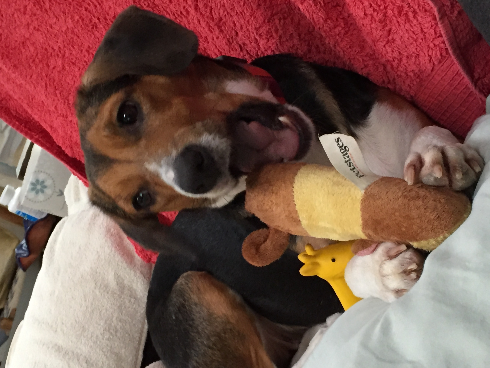

Hounds
Though I've had many different types of hounds, they all have two things in common: they love to sniff everything and have a nose for mischief! Check out some of my favorite hounds below.
Rufus
Eight-Year-Old Basset Hound Mix
Despite being an older dog, Rufus loved to go for long walks and even occasionally play. He always sat in his favorite chair and would stick his snout over to see what was going on.
Luna
Four-Year-Old Beagle
Despite having a rough life and being surrendered to a shelter with cancer, Luna was adopted by a loving family who pampered her. She loved being pet and eating good food, and would greet visitors at the door begging for pets. She sadly passed away in 2021.
Sugar
Ten-Year-Old Beagle
Sugar had to have one of her legs removed because of cancer, but this didn't stop the old girl from living her best life once she was rescued. She loved to snuggle up with people and lay on cozy blankets.
Boomer
Basset Hound
Boomer loved cuddling with his humans and playing. His ears were so long they dragged on the ground as he walked and fell into the food and water bowls when he drank


Lucy Allegra